Agenda Global
Seu cliente escolhe o serviço, o profissional e o melhor horário disponível. O agendamento aparece direto na sua agenda.
R$ 49,90/mês • profissionais ilimitados • sem fidelidade • sem cartão
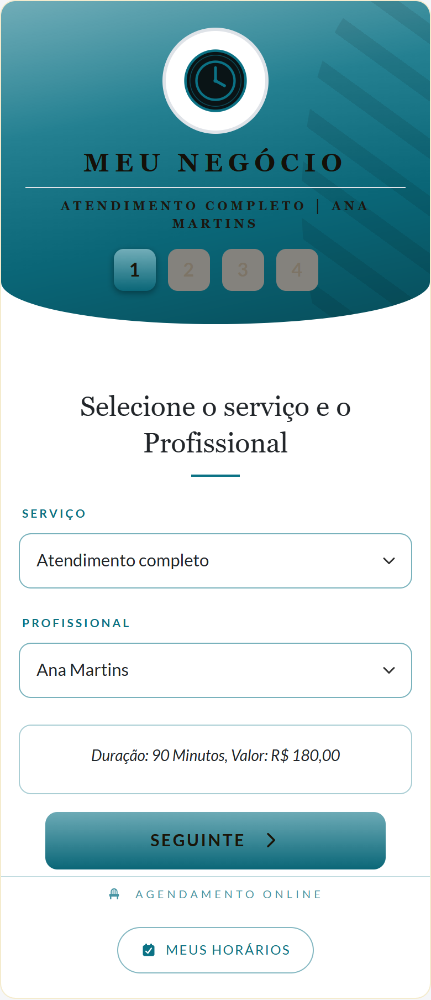
O mesmo agendamento visto dos dois lados: o que o seu cliente faz no celular dele, sem baixar aplicativo, e o que acontece do seu lado.
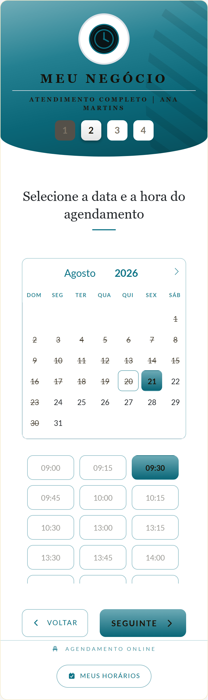
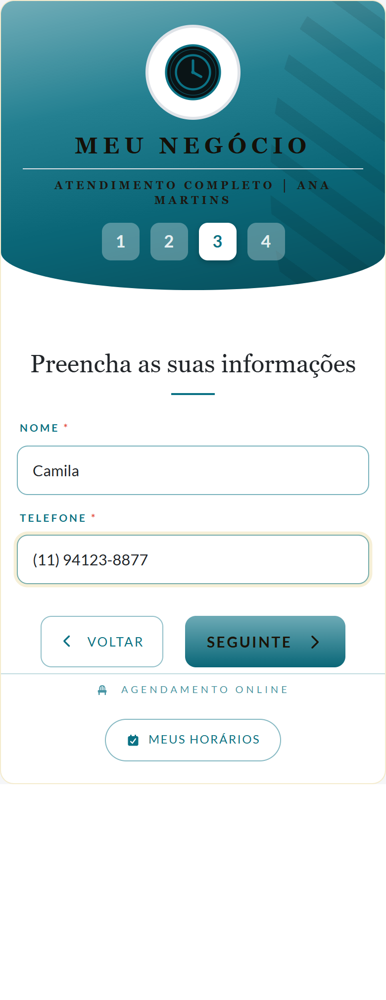
Cai na sua agenda na hora, sem você digitar nada, e aquele horário some da tela de quem entrar depois.
Do celular, em dia, semana, mês ou tabela. Cada profissional com a própria agenda, com o horário, o serviço e o nome do cliente.
Toca no horário e escolhe confirmar presença ou pedir para remarcar, com a mensagem de WhatsApp já escrita. Para mudar de hora, arrasta o agendamento.
A tela de contatos do dia mostra quem está marcado naquela data, em ordem de horário, com serviço, profissional e telefone.
As telas desta página usam um negócio de exemplo, com nome, cor e serviços inventados para demonstrar. A demo que está no ar é de uma barbearia: foi o primeiro ramo que atendemos. O app é o mesmo em qualquer caso: o que muda são os serviços, os nomes, o logo e as cores.
Seu cliente encontra sozinho os horários disponíveis e faz o agendamento.
Horários já ocupados deixam de aparecer como disponíveis.
Serviços, profissionais, horários e atendimentos ficam centralizados.
Veja seus atendimentos, acompanhe resultados e tenha informações para tomar decisões melhores.
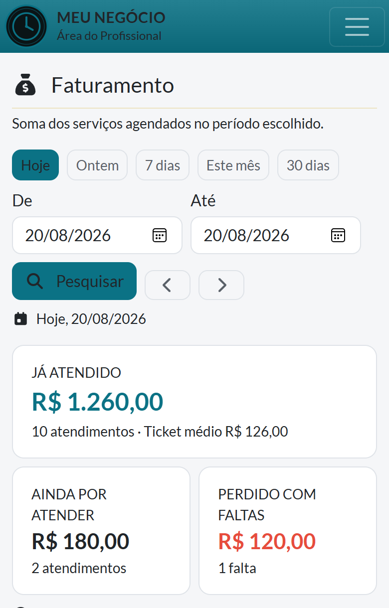
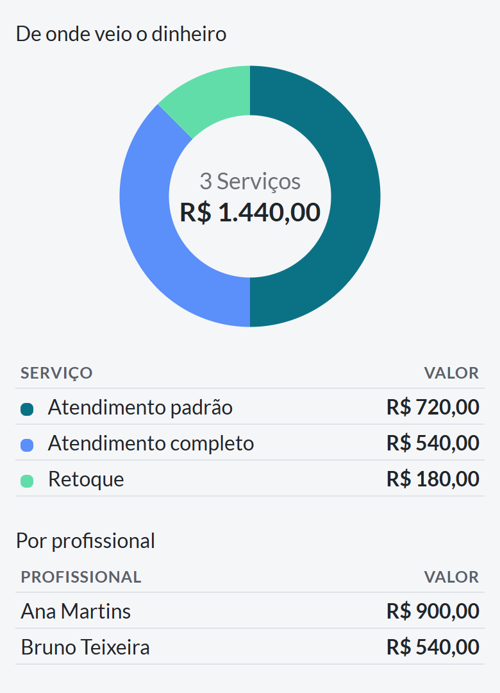
As duas telas são do mesmo negócio de exemplo do resto da página: os números são dele, não de um cliente real.
O valor dos atendimentos por período: hoje, ontem, 7 dias, este mês, 30 dias, ou o intervalo de datas que você escolher.
Quanto cada serviço rendeu no período, do maior para o menor, com a fatia de cada um no total.
Quanto cada profissional rendeu no período. A tabela aparece quando há mais de uma pessoa atendendo.
Você marca quem não compareceu, e o valor daquele horário sai do que foi faturado e aparece separado, como perda do período.
Lance o atendimento presencial em dois toques e ele entra na conta do dia junto com os que foram marcados.
Baixe uma planilha com uma linha por atendimento: serviço, valor, profissional, cliente, falta e o intervalo em que cada um costuma voltar.
O arquivo é seu, e a planilha é o que o sistema entrega: ele não analisa nada por dentro nem manda os seus dados para lugar nenhum.
Depois do primeiro mês de uso, você manda a sua pergunta no nosso WhatsApp e a resposta vem olhando os números do seu negócio. Do tipo "quais dias e horários não se pagam?", "que mensagem eu mando para quem deixou de vir?" ou "monte um plano de 30 dias para eu faturar mais usando só os clientes que já são meus". É a partir do segundo mês porque antes disso não existe histórico suficiente para a resposta valer alguma coisa.
É a mesma agenda em todos eles. Muda o que você escreve nos campos, não o sistema. Estes são exemplos, não a lista fechada:
Corte + barba · 50 min
Escova + hidratação · 90 min
Alongamento em gel · 2h a 3h
Extensão de cílios · 2h
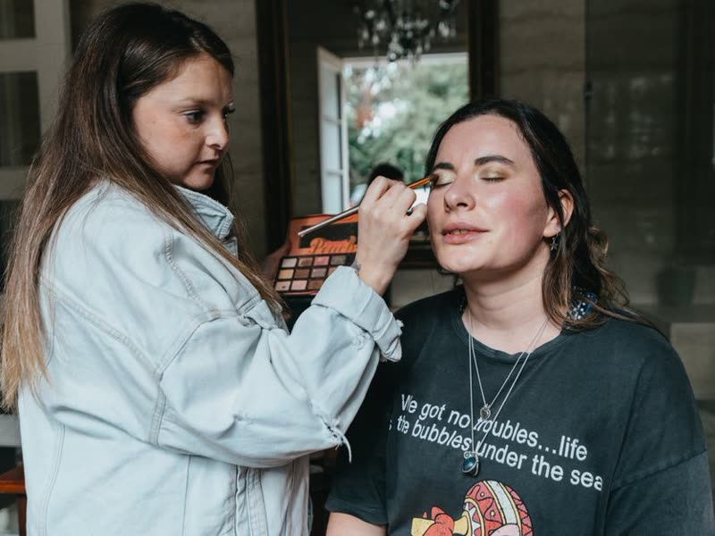
Maquiagem social · 60 min
Limpeza de pele profunda · 60 min
Depilação com cera · 40 min
Sessão fechada · 2h a 4h
Massagem relaxante · 60 min
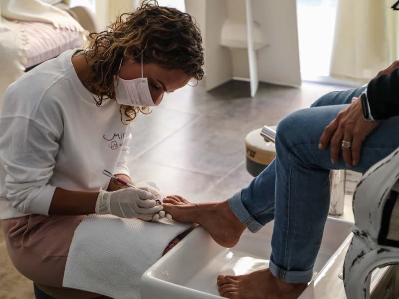
Consulta podológica · 50 min
Sessão de fisioterapia · 50 min
Treino acompanhado · 60 min
Avaliação / limpeza · 40 min
Consulta de retorno · 30 min
Sessão de terapia · 50 min
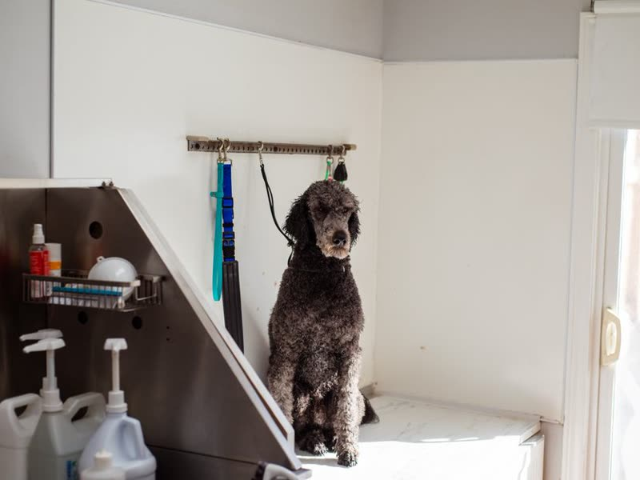
Banho e tosa · 90 min
Aula particular · 60 min
Lavagem completa · 60 min
Não achou o seu? O app não conhece ramo: ele conhece um serviço, quanto tempo leva, quanto custa e quem sabe fazer. Se o seu atendimento tem hora marcada, ele serve. Chame no WhatsApp e a gente monta com os seus serviços.
Para consultório, ele é agenda e só. Não controla pacote de sessões, não guarda prontuário, ficha de anamnese nem qualquer informação de saúde, não cobra sinal nem processa pagamento, não calcula comissão e não dispara lembrete sozinho. Se o centro da sua operação é uma dessas, o app resolve só a parte da agenda, e é melhor saber agora.
Ele não conhece “corte de cabelo”, “alongamento de unha” nem “limpeza de pele”. Ele conhece quatro coisas: um serviço, quanto tempo ele leva, quanto custa e quem sabe fazer. A partir disso ele calcula sozinho quais horários ainda cabem na sua agenda e mostra só esses para quem quer marcar.
Por isso o passo a passo abaixo é o mesmo para qualquer atendimento com hora marcada. Muda o que você escreve nos campos, não o caminho.
No painel, em Serviços. É a primeira coisa que a gente monta junto com você na instalação. Depois disso, alterar é com você, quantas vezes quiser, sem pedir para ninguém e sem custo.
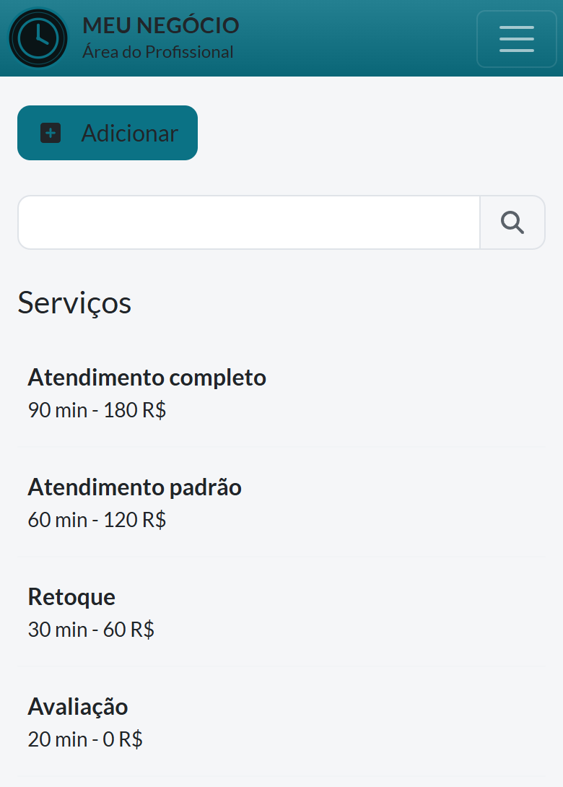
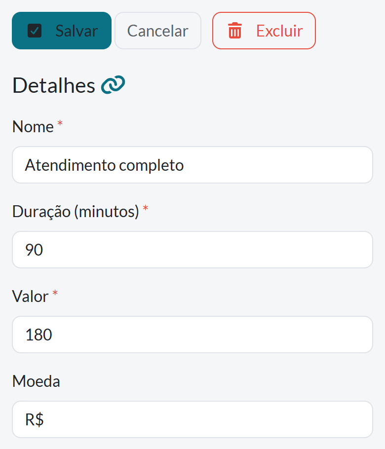
Arraste a tabela para o lado para ver todas as colunas →
| Campo | Exemplo | O que ele muda para o cliente |
|---|---|---|
| Nome | Atendimento completo |
é o texto que ele lê na primeira tela |
| Duração (minutos) | 90 |
o sistema só oferece horário em que 90 minutos cabem inteiros |
| Preço | 180,00 |
aparece como R$ 180,00 antes de ele confirmar |
| Categoria | Principais |
agrupa a lista quando você tem muitos serviços |
| Cor | a cor da marca | nada: é para você bater o olho na agenda e reconhecer |
| Quem atende | Ana, Bruno | só quem estiver marcado aparece para ele escolher |
| Esconder do online | desmarcado | marcado, o serviço some do link e fica só para você lançar pelo painel |
Se um serviço não estiver ligado a ninguém, ele simplesmente não aparece para o cliente, sem mensagem de erro, sem aviso. É o engano mais comum de quem cadastra um serviço novo às pressas: cria, salva, testa o link e acha que o sistema quebrou. Na instalação a gente deixa tudo vinculado; se você criar um serviço depois, é o único campo em que vale prestar atenção.
Os valores acima são de um negócio inventado, só para a tela ter o que mostrar. Os seus serviços, tempos e preços são os seus.
Serviço cadastrado não basta: o sistema precisa saber em que janelas ele pode encaixar. Isso fica no cadastro de cada profissional, inclusive quando o profissional é só você.
Hora de abrir e de fechar em cada dia, com o intervalo de almoço. Sábado pode ter horário diferente do resto da semana.
O dia que você não trabalha toda semana. Ele simplesmente não existe na tela de quem vai marcar.
Um registro cobre o período inteiro, com data inicial e final. Vale só para aquela pessoa: a agenda de quem ficou continua aberta.
Aquele compromisso de quinta às 15h fecha só a janela dele. O resto do dia continua disponível.
Feriado, reforma, viagem: um período bloqueado vale para todo mundo de uma vez.
Por padrão, ninguém marca em cima da hora: os 30 minutos seguintes já não aparecem. Dá para mudar.
Ele abre um link com o seu nome e a sua cor. Não baixa aplicativo, não cria conta e não escolhe senha. O formulário pede nome e celular, só isso.
Esta é a parte que dispensa manutenção. Um horário só aparece para o cliente se estiver mesmo livre. Somem sozinhos:
Por outro cliente, no mesmo profissional.
Inclusive o intervalo de almoço e o sábado diferente.
Repete sozinha, sem você lançar toda vez.
Do profissional que estiver de férias, e só dele.
Aquele compromisso solto no meio do dia.
Quando o negócio inteiro parou.
E os 30 minutos seguintes, para ninguém marcar em cima da hora.
Se o serviço leva 90 minutos, um vão de 40 não é oferecido.
Você abre o painel pelo celular. A tela de contatos do dia mostra quem está marcado naquela data, em ordem de horário, com o serviço, quem atende, o telefone e dois botões de WhatsApp por pessoa, avisar cancelamento e lembrar do horário, com a mensagem já escrita e o nome dela dentro.
No calendário, tocar em um horário abre confirmar presença e pedir para remarcar. O de remarcar manda a pessoa para o link dela, que oferece só horário livre. Nada de colar uma lista na mensagem e ela envelhecer em cinco minutos.
O sistema escreve a mensagem; o envio é um por vez, no seu WhatsApp. Não existe disparo em massa aqui, e isso é decisão de projeto: envio em rajada é o padrão que faz o WhatsApp bloquear número, e o número é o seu negócio.
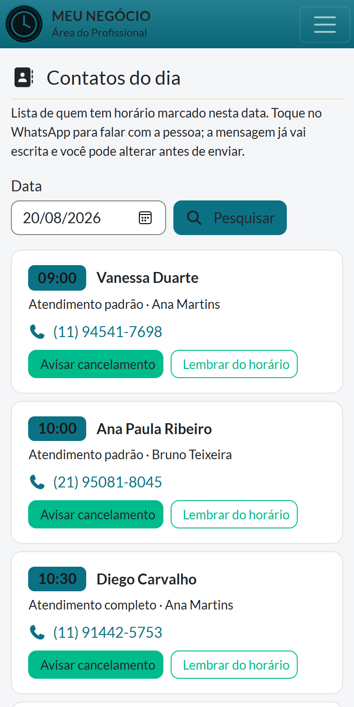
Os dois planos têm o app inteiro. A diferença é o endereço e o quanto fazemos por você.
Para quem quer o cadastro pronto e a agenda recebendo horário ainda esta semana.
Para quem quer endereço próprio na internet, com a cara da casa.
14 dias grátis para testar, sem cartão. Sem fidelidade e sem multa para cancelar.
Na montagem, a gente cadastra junto com você: basta mandar a lista com o nome de cada serviço, quanto tempo ele leva e quanto custa. Depois disso é você quem altera, pelo painel, quantas vezes quiser. Reajuste de preço não depende da gente e não tem custo.
Sim, e é o caso normal. Cada serviço tem a própria duração, e o sistema só oferece à pessoa os horários em que aquele serviço cabe inteiro. Um serviço de 3 horas e um de 30 minutos não disputam o mesmo espaço: o de 30 encaixa em vãos onde o de 3 horas nem aparece.
Dá para cadastrar o serviço sem valor, e aí ele aparece para marcar sem preço na tela. A outra saída é marcar esconder do agendamento online: o serviço fica só no painel, e quem quiser aquele atendimento fala com você: você lança o horário na mão.
Não. O preço é do negócio, não da pessoa: você cadastra quantos profissionais quiser sem a mensalidade mudar. Cada um com expediente, folga e férias próprios, e ligado só aos serviços que ele faz.
Você marca pelo painel, no horário que quiser: o link público é um caminho a mais, não o único. A partir do momento em que está lançado, aquele espaço some da tela de quem for marcar online.
Não, nem você nem o seu cliente. É um endereço na internet: abre no navegador do celular ou do computador. Dá para adicionar o atalho na tela de início do celular e ele passa a abrir como se fosse um aplicativo.
Algumas horas depois que você mandar a lista de serviços com preço e duração, os horários de trabalho e o logo. Você recebe o link pronto para testar antes de divulgar para qualquer cliente.
Manda o nome do seu negócio, a sua cor e a lista do que você faz com preço e duração. A gente monta e te devolve o link para você abrir no seu celular, antes de decidir qualquer coisa. Teste grátis de 14 dias, sem cartão.